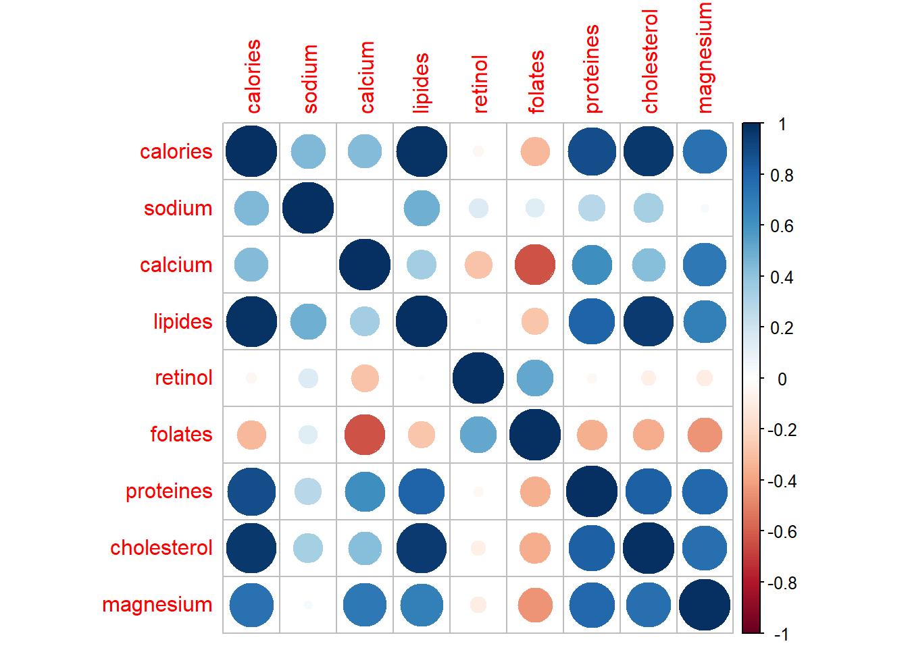
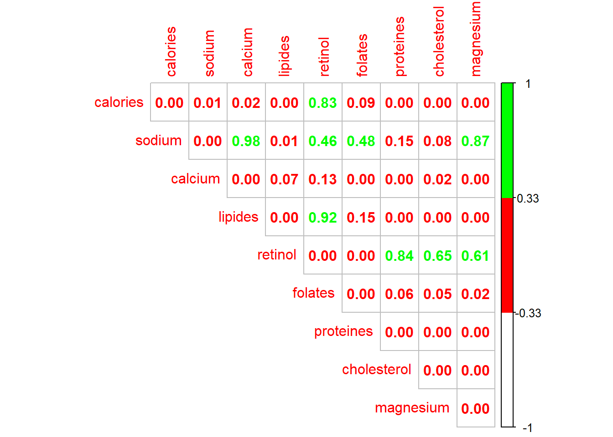
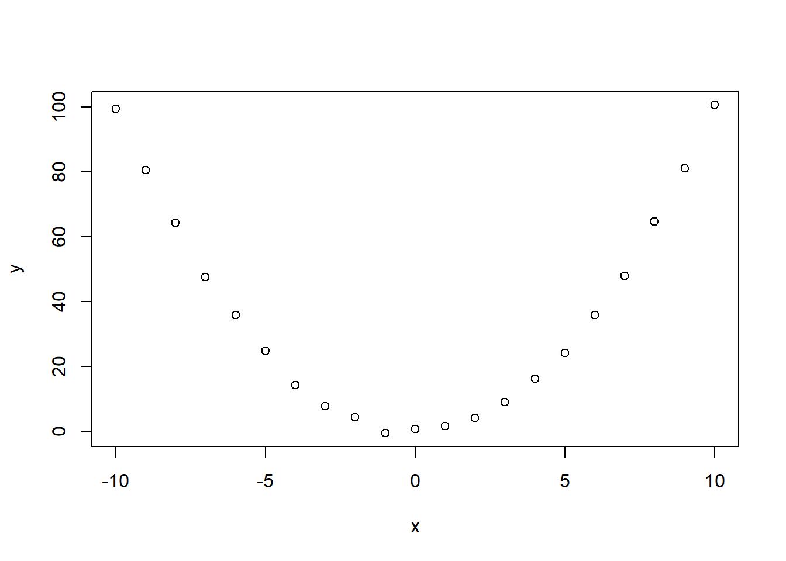
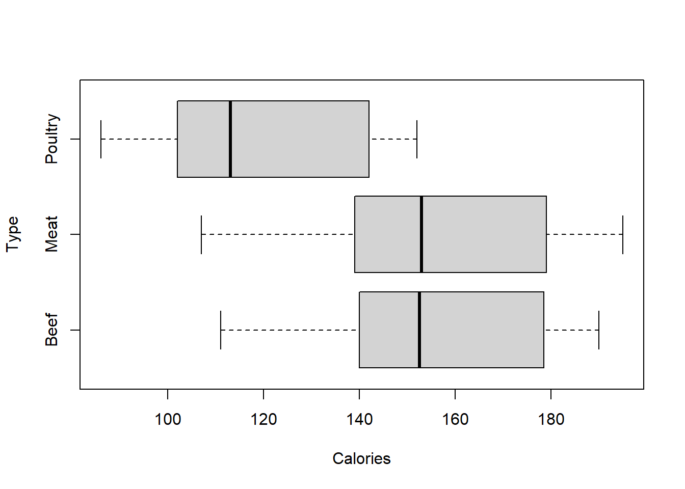
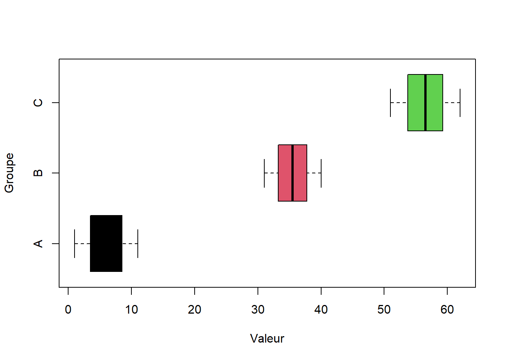
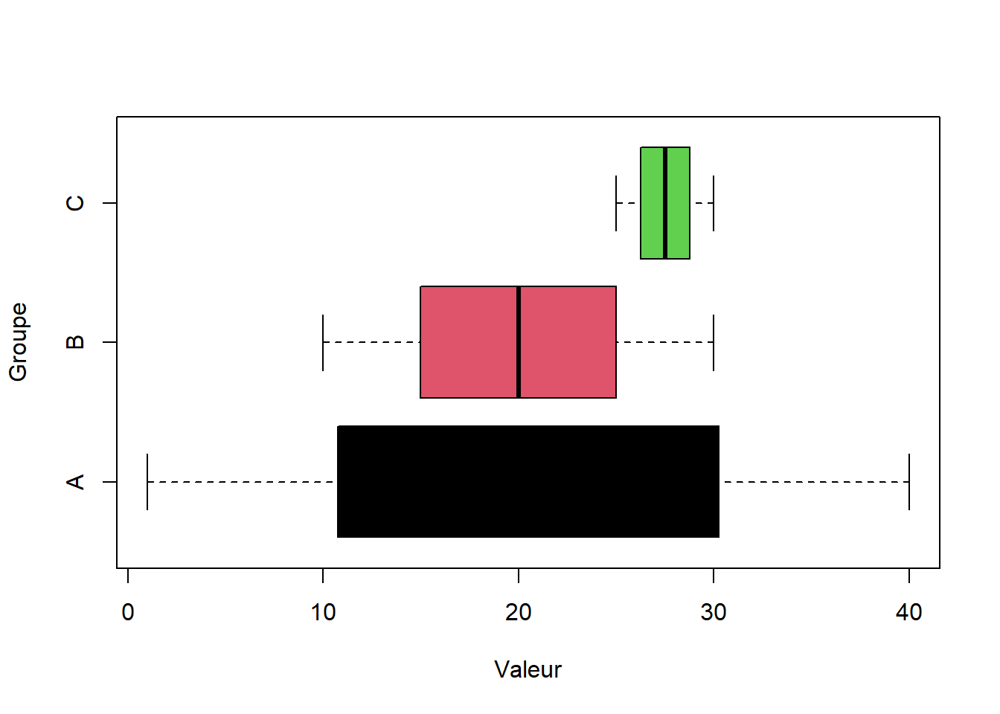
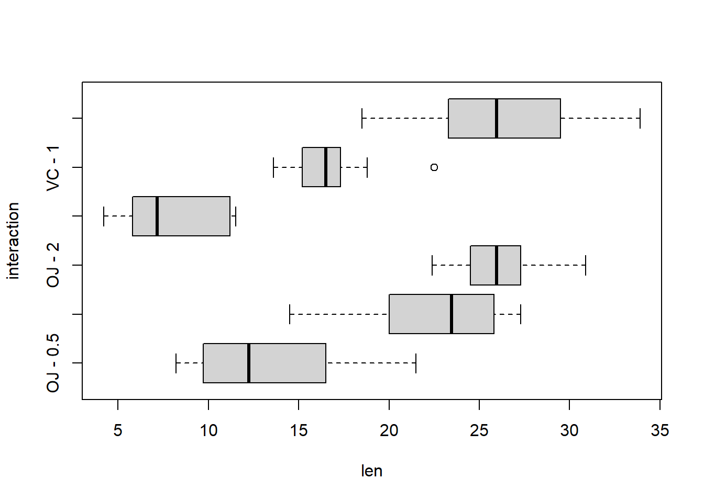

Chapitre 11 Test indépendance
Les tests d’indépendances permettent de définir s’il existe un lien entre deux variables. Il existe différent test d’indépence, en voici quelques exemples :
- Test indépendance entre deux variables quantitatives / Test de corrélation Pearson
- Test d’indépendance entre deux variables qualitatives / Test du Chi²
- Test d’indépendance entre une variable qualitative et une quantitative / Test de Fisher avec l’analyse de la variance (ANOVA)
11.1 Test de corrélation
L’intérêt des tests de corrélation est d’apporter plus de pertinence et fiabilité aux coefficients de corrélation. Il existe différents test de corrélation, nous utilisons celui de Pearson.
On travaille avec le jeu de données fromage 🧀 disponible en cliquant ici.
df <- read.csv(file = "./dataset/fromage.txt", sep = "\t", row.names = 1)| calories | sodium | calcium | lipides | retinol | folates | proteines | cholesterol | magnesium | |
|---|---|---|---|---|---|---|---|---|---|
| CarredelEst | 314 | 353.5 | 72.6 | 26.3 | 51.6 | 30.3 | 21.0 | 70 | 20 |
| Babybel | 314 | 238.0 | 209.8 | 25.1 | 63.7 | 6.4 | 22.6 | 70 | 27 |
| Beaufort | 401 | 112.0 | 259.4 | 33.3 | 54.9 | 1.2 | 26.6 | 120 | 41 |
| Bleu | 342 | 336.0 | 211.1 | 28.9 | 37.1 | 27.5 | 20.2 | 90 | 27 |
| Camembert | 264 | 314.0 | 215.9 | 19.5 | 103.0 | 36.4 | 23.4 | 60 | 20 |
| Cantal | 367 | 256.0 | 264.0 | 28.8 | 48.8 | 5.7 | 23.0 | 90 | 30 |
plot(df)
library(corrplot)
corrplot(cor(df, method = "pearson"))
On pose les hypothèses de départ :
- H0 : Variables indépendantes si p-value > 5%
- H1 : Variables non indépendantes si p-value < 5%
11.1.1 Lipide vs Magnesium
La première sortie correspond au coefficient de corrélation, la seconde à la p-value (ou probabilité critique)
cor(x = df$lipides, y = df$magnesium)## [1] 0.6898601cor.test(x = df$lipides, y = df$magnesium)##
## Pearson's product-moment correlation
##
## data: df$lipides and df$magnesium
## t = 4.9515, df = 27, p-value = 3.469e-05
## alternative hypothesis: true correlation is not equal to 0
## 95 percent confidence interval:
## 0.4327766 0.8431785
## sample estimates:
## cor
## 0.6898601H1 : Variables non indépendantes
11.1.2 Sodium vs Retinol
cor.test(x = df$sodium, y = df$retinol)##
## Pearson's product-moment correlation
##
## data: df$sodium and df$retinol
## t = 0.75788, df = 27, p-value = 0.4551
## alternative hypothesis: true correlation is not equal to 0
## 95 percent confidence interval:
## -0.2345870 0.4851693
## sample estimates:
## cor
## 0.1443276H0 : Variables indépendantes si p-value > 5%
Si on veut rejeter H0 et prendre H1, j’ai 45,5% de chance de me tromper
Les tests statistiques sont trés sensibles à la taille de l’échantillon. Un coefficient de corrélation de 0.14 n’aura pas la même significativité sur un échantillon de 29 fromages qu’un échantillon de 319 fromages avec le même coefficient de corrélation.
On construit un dataframe en dupliquant le nombre de lignes
sodium <- rep(df$sodium,times = 10)
retinol <- rep(df$retinol,times = 10)
nom <- rep(rownames(df),times = 10)
df_10 <- data.frame(nom,sodium,retinol)Chaque fromage apparaît plusieurs fois, on a augmenté la taille de l’échantillon
table(df_10$nom)##
## Babybel Beaufort Bleu Camembert
## 10 10 10 10
## Cantal CarredelEst Chabichou Chaource
## 10 10 10 10
## Cheddar Comte Coulomniers Edam
## 10 10 10 10
## Emmental Fr.chevrepatemolle Fr.fondu.45 Fr.frais20nat.
## 10 10 10 10
## Fr.frais40nat. Maroilles Morbier Parmesan
## 10 10 10 10
## Petitsuisse40 PontlEveque Pyrenees Reblochon
## 10 10 10 10
## Rocquefort SaintPaulin Tome Vacherin
## 10 10 10 10
## Yaourtlaitent.nat.
## 10On effectue un autre test de corrélation avec les mêmes variables sur l’échantillon plus grand.
cor.test(x = df_10$sodium, y = df_10$retinol)##
## Pearson's product-moment correlation
##
## data: df_10$sodium and df_10$retinol
## t = 2.4752, df = 288, p-value = 0.01389
## alternative hypothesis: true correlation is not equal to 0
## 95 percent confidence interval:
## 0.0296407 0.2552637
## sample estimates:
## cor
## 0.1443276H1 : Variables non indépendantes
On obtient logiquement le même coefficient de corrélation, mais en revanche, cette fois si la p-value est proche de 0.
11.1.3 Matrice des p-values
On effectue un test de corrélation sur chaque variable 2 à 2 en isolant uniquement la p-value
get_pvalue <- function(x,y){
p <- cor.test(df[,x],df[,y])$p.value
return(p)
}
colonne <- colnames(df)
ligne <- colnames(df)
df_pvalues <- outer(X = colonne, Y = ligne, FUN = Vectorize(get_pvalue))
colnames(df_pvalues) <- colnames(df)
rownames(df_pvalues) <- colnames(df)On affiche la matrice des corrélations avec un gradiant de couleur
corrplot(df_pvalues, method="number", type="upper",
col=colorRampPalette(c("white","red","green"))(3))
11.1.4 Cas de relation non linéaire
Les différents de corrélation sont beaucoup plus adaptés aux relation linéaire. C’est pourquoi il est important de toujours visualiser les distributions (plus d’infos ici).
Cas d’une relation non-linéaire et non-monotone
x <- -10:10
y <- x^2 + rnorm(n = length(x))
plot(x,y)
cor.test(x, y, method = "pearson")##
## Pearson's product-moment correlation
##
## data: x and y
## t = 0.036055, df = 19, p-value = 0.9716
## alternative hypothesis: true correlation is not equal to 0
## 95 percent confidence interval:
## -0.4249327 0.4383928
## sample estimates:
## cor
## 0.008271336cor.test(x, y, method = "spearman")##
## Spearman's rank correlation rho
##
## data: x and y
## S = 1456, p-value = 0.8148
## alternative hypothesis: true rho is not equal to 0
## sample estimates:
## rho
## 0.05454545cor.test(x, y, method = "kendall")##
## Kendall's rank correlation tau
##
## data: x and y
## T = 109, p-value = 0.8347
## alternative hypothesis: true tau is not equal to 0
## sample estimates:
## tau
## 0.0380952411.2 Test du CHI²
L’intérêt du test du Chi² est de mesurer l’indépendance entre deux variables qualitatives à partir de tableau de contigence.
11.2.1 Titanic
On travaille sur le jeu de données Titanic 🧊⛴ disponible en cliquant ici.
df <- read.csv(file = "./dataset/Titanic.csv", row.names = 1)| Name | PClass | Age | Sex | Survived | SexCode |
|---|---|---|---|---|---|
| Allen, Miss Elisabeth Walton | 1st | 29.00 | female | 1 | 1 |
| Allison, Miss Helen Loraine | 1st | 2.00 | female | 0 | 1 |
| Allison, Mr Hudson Joshua Creighton | 1st | 30.00 | male | 0 | 0 |
| Allison, Mrs Hudson JC (Bessie Waldo Daniels) | 1st | 25.00 | female | 0 | 1 |
| Allison, Master Hudson Trevor | 1st | 0.92 | male | 1 | 0 |
| Anderson, Mr Harry | 1st | 47.00 | male | 1 | 0 |
df_count <- table(df$Survived, df$PClass)On pose :
- H0 : Variables indépendantes si p-value > 5%
- H1 : Variables non indépendantes si p-value < 5%
resultat <-chisq.test(df$Survived,df$PClass)
resultat##
## Pearson's Chi-squared test
##
## data: df$Survived and df$PClass
## X-squared = 172.3, df = 2, p-value < 2.2e-16H1 : Variables non indépendantes
La fonction attributes permet d’afficher les différentes sorties calculées.
attributes(resultat)## $names
## [1] "statistic" "parameter" "p.value" "method" "data.name" "observed"
## [7] "expected" "residuals" "stdres"
##
## $class
## [1] "htest"Par exemple le tableau des effectifs théoriques.
resultat$expected## df$PClass
## df$Survived 1st 2nd 3rd
## 0 211.642 184.03656 467.3214
## 1 110.358 95.96344 243.678611.2.2 Exemple du support
data <- matrix(rbind(c(693,886,534,153),c(597,696,448,95)),ncol=4)
data## [,1] [,2] [,3] [,4]
## [1,] 693 886 534 153
## [2,] 597 696 448 95chisq.test(data)##
## Pearson's Chi-squared test
##
## data: data
## X-squared = 6.0504, df = 3, p-value = 0.1092H0 : Variables indépendantes
Si on veut rejeter H0 et prendre H1, j’ai 10,9% de chance de me tromper
Lecture dans la table du Chi2
p <- seq(0.80, 0.90, 0.005)
dof <- seq(1,3)
chisq_table <- outer(p, dof, function(x,y) qchisq(x,y))
chisq_table <- t(chisq_table)
colnames(chisq_table) <- 1 - p
rownames(chisq_table) <- dof
chisq_table <- round(chisq_table,2)| 0.2 | 0.195 | 0.19 | 0.185 | 0.18 | 0.175 | 0.17 | 0.165 | 0.16 | 0.155 | 0.15 | 0.145 | 0.14 | 0.135 | 0.13 | 0.125 | 0.12 | 0.115 | 0.11 | 0.105 | 0.1 |
|---|---|---|---|---|---|---|---|---|---|---|---|---|---|---|---|---|---|---|---|---|
| 1.64 | 1.68 | 1.72 | 1.76 | 1.80 | 1.84 | 1.88 | 1.93 | 1.97 | 2.02 | 2.07 | 2.12 | 2.18 | 2.23 | 2.29 | 2.35 | 2.42 | 2.48 | 2.55 | 2.63 | 2.71 |
| 3.22 | 3.27 | 3.32 | 3.37 | 3.43 | 3.49 | 3.54 | 3.60 | 3.67 | 3.73 | 3.79 | 3.86 | 3.93 | 4.00 | 4.08 | 4.16 | 4.24 | 4.33 | 4.41 | 4.51 | 4.61 |
| 4.64 | 4.70 | 4.76 | 4.83 | 4.89 | 4.96 | 5.02 | 5.09 | 5.17 | 5.24 | 5.32 | 5.40 | 5.48 | 5.56 | 5.65 | 5.74 | 5.83 | 5.93 | 6.03 | 6.14 | 6.25 |
📢 Taille de l’échantillon
Les tests d’indépendance sont trés sensibles à la taille des échantillons. Ici on divise par 100 pour avoir des effectifs faibles mais en conservant les répartitions.
chisq.test(data/100)##
## Pearson's Chi-squared test
##
## data: data/100
## X-squared = 0.060504, df = 3, p-value = 0.9961H0 : Variables indépendantes
Ici on multiplie par 100 pour avoir des effectifs grands mais en conservant les répartitions
chisq.test(data*100)##
## Pearson's Chi-squared test
##
## data: data * 100
## X-squared = 605.04, df = 3, p-value < 2.2e-16H1 : Variables non indépendantes
11.3 ANOVA 1
On effectue une analyse de variance pour mesurer l’indépendance entre une variable qualitative et une quantitative.
Pour illustrer cela, on utilise le jeu de données Hotdogs 🌭 disponible en cliquant ici.
df <- read.csv(file = "./dataset/Hotdogs.csv",
sep = ";")| Type | Calories | Sodium |
|---|---|---|
| Beef | 186 | 495 |
| Beef | 181 | 477 |
| Beef | 176 | 425 |
| Beef | 149 | 322 |
| Beef | 184 | 482 |
| Beef | 190 | 587 |
On va tester l’indépendance entre la variable qualitative Type et la variable quantitatives Calories.
boxplot(Calories ~ Type, data = df,
horizontal = TRUE)
Dans une ANOVA, on cherche à déterminer si les moyennes des groupes sont significativement différentes. On pose donc :
- H0 : Les moyennes de chaque groupe sont égales si p-value > 5%
- H1 : Les moyennes de chaque groupe ne sont pas toutes égales si p-value < 5%
Dans une ANOVA, on étudie la variance de chacun de ces groupes. Pour cela on utilise la fonction aov().
aov <- aov(formula = Calories ~ Type, data = df)
summary(aov)## Df Sum Sq Mean Sq F value Pr(>F)
## Type 2 17692 8846 16.07 3.86e-06 ***
## Residuals 51 28067 550
## ---
## Signif. codes: 0 '***' 0.001 '**' 0.01 '*' 0.05 '.' 0.1 ' ' 1H1 : Les moyennes de chaque groupe ne sont pas toutes égales
Quand on dispose d’un petit échantillon, la pertinence de ce test repose sur la validation de plusieurs hypothèses :
- l’indépendance entre les échantillons de chaque groupe
- l’égalité des variances que l’on peut verifier avec un test de Bartlett.
- la normalité des résidus avec un test de Shapiro.
11.3.1 L’indépendance
L’indépendance est une des 3 conditions de validité d’une ANOVA. Seul le contexte de l’étude permet de s’assurer de l’indépendance entre les échantillons de chaque groupe (ici beef, poultry, chicken.)
11.3.2 L’égalité des variances
On parle aussi d’homoscédasticité. C’est une des 3 conditions de validité d’une ANOVA. On cherche à démontrer que les variances de chaque groupe sont égales. Dans un boxplot, l’amplitude des boîtes traduit graphiquement l’égalité des variances.
boxplot(Calories ~ Type, data = df,
horizontal = TRUE)
Mais c’est le test de bartlett qui permet de tester si les variances sont significativement différentes ou non avec :
- H0 : Les variances de chaque groupe sont égales si p-value > 5%
- H1 : Les variances de chaque groupe ne sont pas toutes égales < 5%
bartlett.test(Calories ~ Type, data = df)##
## Bartlett test of homogeneity of variances
##
## data: Calories by Type
## Bartlett's K-squared = 0.26732, df = 2, p-value = 0.8749H0 : Les variances de chaque groupe sont égales. La deuxième condition pour effectuer une anova est validée.
11.3.3 Normalité des résidus
C’est une des 3 conditions de validité d’une ANOVA. L’objectif est de s’assurer que les résidus suivent une loi normale afin de ne pas affirmer qu’il existe une différence de moyenne entre les groupes qui serait causée par le hasard.
Dans R, on utilise le test de Shapiro-Wilk pour tester la normalité des résidus où :
- H0 : Les résidus suivent une loi normale si p-value > 5%
- H1 : Les résidus ne suivent pas une loi normale si p-value < 5%
aov <- aov(formula = Calories ~ Type, data = df)
shapiro.test(aov$residuals)##
## Shapiro-Wilk normality test
##
## data: aov$residuals
## W = 0.94199, p-value = 0.0113H1 : Les résidus ne suivent pas une loi normale
11.3.4 Calcul - Cas des variances égales
a <- seq(from = 1, to = 11, length.out = 9 )
b <- seq(from = 31, to = 40, length.out = 9 )
c <- seq(from = 51, to = 62, length.out = 9 )df <- data.frame(Valeur = c(a,b,c), Groupe = c(rep("A",9),
rep("B",9),
rep("C",9)))
kable(df)| Valeur | Groupe |
|---|---|
| 1.000 | A |
| 2.250 | A |
| 3.500 | A |
| 4.750 | A |
| 6.000 | A |
| 7.250 | A |
| 8.500 | A |
| 9.750 | A |
| 11.000 | A |
| 31.000 | B |
| 32.125 | B |
| 33.250 | B |
| 34.375 | B |
| 35.500 | B |
| 36.625 | B |
| 37.750 | B |
| 38.875 | B |
| 40.000 | B |
| 51.000 | C |
| 52.375 | C |
| 53.750 | C |
| 55.125 | C |
| 56.500 | C |
| 57.875 | C |
| 59.250 | C |
| 60.625 | C |
| 62.000 | C |
boxplot(Valeur ~ Groupe, data = df,
col = 1:3, horizontal = TRUE)
Comment calculer le tableau récaptitulatif de l’analyse de la variance :
## Df Sum Sq Mean Sq F value Pr(>F)
## Groupe 2 11585 5792 491 <2e-16 ***
## Residuals 24 283 12
## ---
## Signif. codes: 0 '***' 0.001 '**' 0.01 '*' 0.05 '.' 0.1 ' ' 1Variance intra classes
SCE_a <- (a - mean(a))^2
SCE_b <- (b - mean(b))^2
SCE_c <- (c - mean(c))^2
intra <- sum(SCE_a + SCE_b + SCE_c)
intra## [1] 283.125Variance inter classes
moyenne <- mean(df$Valeur)
moyenne_facteur <- tapply(X = df$Valeur,
INDEX = df$Groupe,
FUN = mean)
longueur_facteur <- tapply(X = df$Valeur,
INDEX = df$Groupe,
FUN = length)
inter <- sum(longueur_facteur*((moyenne_facteur - moyenne)^2))
inter## [1] 11584.5Degré de liberté
n <- nrow(df)
p <- length(levels(df$Groupe))
dof_inter <- p - 1
dof_intra <- n - p
dof_inter## [1] -1dof_intra## [1] 27Calcul de la statistique de test de Fisher
Stat_Fisher <- (inter/dof_inter) / (intra/dof_intra)
Stat_Fisher## [1] -1104.747On lit dans la table de Fisher
pvalue <- 1-pf(q = Stat_Fisher,
df1 = dof_inter,
df2 = dof_intra)## Warning in pf(q = Stat_Fisher, df1 = dof_inter, df2 = dof_intra): Production de
## NaNpvalue## [1] NaNRéciproque de la loi de Fisher pour retrouver la statistique de test.
qf(p = 1-pvalue, df1 = dof_inter, df2 = dof_intra)## [1] NaN11.3.5 Calcul - Cas des variances inégales
a <- seq(from = 1, to = 40, length.out = 9 )
b <- seq(from = 10, to = 30, length.out = 9 )
c <- seq(from = 25, to = 30, length.out = 9 )df <- data.frame(Valeur = c(a,b,c), Groupe = c(rep("A",9),
rep("B",9),
rep("C",9)))
kable(df)| Valeur | Groupe |
|---|---|
| 1.000 | A |
| 5.875 | A |
| 10.750 | A |
| 15.625 | A |
| 20.500 | A |
| 25.375 | A |
| 30.250 | A |
| 35.125 | A |
| 40.000 | A |
| 10.000 | B |
| 12.500 | B |
| 15.000 | B |
| 17.500 | B |
| 20.000 | B |
| 22.500 | B |
| 25.000 | B |
| 27.500 | B |
| 30.000 | B |
| 25.000 | C |
| 25.625 | C |
| 26.250 | C |
| 26.875 | C |
| 27.500 | C |
| 28.125 | C |
| 28.750 | C |
| 29.375 | C |
| 30.000 | C |
boxplot(Valeur ~ Groupe, data = df,
col = 1:3, horizontal = TRUE)
Comment calculer le tableau récaptitulatif de l’analyse de la variance :
## Df Sum Sq Mean Sq F value Pr(>F)
## Groupe 2 316.5 158.25 2.082 0.147
## Residuals 24 1824.4 76.02Variance intra classes
SCE_a <- (a - mean(a))^2
SCE_b <- (b - mean(b))^2
SCE_c <- (c - mean(c))^2
intra <- sum(SCE_a + SCE_b + SCE_c)
intra## [1] 1824.375Variance inter classes
moyenne <- mean(df$Valeur)
moyenne_facteur <- tapply(X = df$Valeur,
INDEX = df$Groupe,
FUN = mean)
longueur_facteur <- tapply(X = df$Valeur,
INDEX = df$Groupe,
FUN = length)
inter <- sum(longueur_facteur*((moyenne_facteur - moyenne)^2))
inter## [1] 316.5Degré de liberté
n <- nrow(df)
p <- length(levels(df$Groupe))
dof_inter <- p - 1
dof_intra <- n - p
dof_inter## [1] -1dof_intra## [1] 27Calcul de la statistique de test de Fisher
Stat_Fisher <- (inter/dof_inter) / (intra/dof_intra)
Stat_Fisher## [1] -4.68407On lit dans la table de Fisher
pvalue <- 1-pf(q = Stat_Fisher,
df1 = dof_inter,
df2 = dof_intra)## Warning in pf(q = Stat_Fisher, df1 = dof_inter, df2 = dof_intra): Production de
## NaNpvalue## [1] NaNRéciproque de la loi de Fisher pour retrouver la statistique de test.
qf(p = 1-pvalue, df1 = dof_inter, df2 = dof_intra)## [1] NaN11.4 ANOVA 2
Même principe que l’Anova à un facteur sauf qu’on ajoute un autre facteur. L’idée est de tester l’indépendance de ces facteurs sur une variable quantitatives continue.
On étudie la longueur des odontoblastes (cellules responsables de la croissance dentaire) chez 60 cobayes. Chaque animal a reçu l’une des trois doses de vitamine C (0,5, 1 et 2 mg / jour) par l’une des deux méthodes d’administration, du jus d’orange ou de l’acide ascorbique (une forme de vitamine C et codée VC) :
- len : lLongueur de la dent
- supp : supplément (VC ou OJ).
- dose : dose en milligrammes / jour
Ce jeu de données ToothGrowth est présent dans le datasets.
df <- ToothGrowth| len | supp | dose |
|---|---|---|
| 4.2 | VC | 0.5 |
| 11.5 | VC | 0.5 |
| 7.3 | VC | 0.5 |
| 5.8 | VC | 0.5 |
| 6.4 | VC | 0.5 |
| 10.0 | VC | 0.5 |
| 11.2 | VC | 0.5 |
| 11.2 | VC | 0.5 |
| 5.2 | VC | 0.5 |
| 7.0 | VC | 0.5 |
| 16.5 | VC | 1.0 |
| 16.5 | VC | 1.0 |
| 15.2 | VC | 1.0 |
| 17.3 | VC | 1.0 |
| 22.5 | VC | 1.0 |
| 17.3 | VC | 1.0 |
| 13.6 | VC | 1.0 |
| 14.5 | VC | 1.0 |
| 18.8 | VC | 1.0 |
| 15.5 | VC | 1.0 |
| 23.6 | VC | 2.0 |
| 18.5 | VC | 2.0 |
| 33.9 | VC | 2.0 |
| 25.5 | VC | 2.0 |
| 26.4 | VC | 2.0 |
| 32.5 | VC | 2.0 |
| 26.7 | VC | 2.0 |
| 21.5 | VC | 2.0 |
| 23.3 | VC | 2.0 |
| 29.5 | VC | 2.0 |
| 15.2 | OJ | 0.5 |
| 21.5 | OJ | 0.5 |
| 17.6 | OJ | 0.5 |
| 9.7 | OJ | 0.5 |
| 14.5 | OJ | 0.5 |
| 10.0 | OJ | 0.5 |
| 8.2 | OJ | 0.5 |
| 9.4 | OJ | 0.5 |
| 16.5 | OJ | 0.5 |
| 9.7 | OJ | 0.5 |
| 19.7 | OJ | 1.0 |
| 23.3 | OJ | 1.0 |
| 23.6 | OJ | 1.0 |
| 26.4 | OJ | 1.0 |
| 20.0 | OJ | 1.0 |
| 25.2 | OJ | 1.0 |
| 25.8 | OJ | 1.0 |
| 21.2 | OJ | 1.0 |
| 14.5 | OJ | 1.0 |
| 27.3 | OJ | 1.0 |
| 25.5 | OJ | 2.0 |
| 26.4 | OJ | 2.0 |
| 22.4 | OJ | 2.0 |
| 24.5 | OJ | 2.0 |
| 24.8 | OJ | 2.0 |
| 30.9 | OJ | 2.0 |
| 26.4 | OJ | 2.0 |
| 27.3 | OJ | 2.0 |
| 29.4 | OJ | 2.0 |
| 23.0 | OJ | 2.0 |
En théorie, dans une ANOVA à plusieurs facteurs, il faut valider chacune des hypothèses une à une pour chaque facteur. La particularité de l’ANOVA à plusieurs facteurs réside dans la mesure de l’intéraction entre les facteurs pouvant mener à des différences de moyennes entres les groupes.
11.4.3 Effet l’intéraction entre les deux facteurs
Pour visualiser graphiquement l’intéraction, on crée une colonne avec les deux modalités
df$interaction <- paste(df$supp,"-",df$dose)boxplot(len ~ interaction, data = df,
horizontal = TRUE)
11.4.4 Calcul de l’ANOVA 2
Quelques soit le nombre de facteurs étudiés, nous avons toujours les mêmes hypothèses dans une ANOVA :
- H0 : Les moyennes de chaque groupe sont égales si p-value > 5%
- H1 : Les moyennes de chaque groupe ne sont pas toutes égales si p-value < 5%
df$dose <- as.factor(df$dose)
aov <- aov(formula = len ~ dose + supp + supp*dose , data = df)
summary(aov)## Df Sum Sq Mean Sq F value Pr(>F)
## dose 2 2426.4 1213.2 92.000 < 2e-16 ***
## supp 1 205.3 205.3 15.572 0.000231 ***
## dose:supp 2 108.3 54.2 4.107 0.021860 *
## Residuals 54 712.1 13.2
## ---
## Signif. codes: 0 '***' 0.001 '**' 0.01 '*' 0.05 '.' 0.1 ' ' 1H1 : Les moyennes de chaque groupe ne sont pas toutes égales pour chaque facteur.
📢 On voit donc qu’il existe une intéraction entre les deux variables. Pour mesurer quelles associations sont significativement différentes des autres, on peut utilise un test de Tukey qui consiste à faire des tests de comparaison de moyenne sur deux échantillon avec toutes les combinaisons d’association
TukeyHSD(aov)## Tukey multiple comparisons of means
## 95% family-wise confidence level
##
## Fit: aov(formula = len ~ dose + supp + supp * dose, data = df)
##
## $dose
## diff lwr upr p adj
## 1-0.5 9.130 6.362488 11.897512 0.0e+00
## 2-0.5 15.495 12.727488 18.262512 0.0e+00
## 2-1 6.365 3.597488 9.132512 2.7e-06
##
## $supp
## diff lwr upr p adj
## VC-OJ -3.7 -5.579828 -1.820172 0.0002312
##
## $`dose:supp`
## diff lwr upr p adj
## 1:OJ-0.5:OJ 9.47 4.671876 14.2681238 0.0000046
## 2:OJ-0.5:OJ 12.83 8.031876 17.6281238 0.0000000
## 0.5:VC-0.5:OJ -5.25 -10.048124 -0.4518762 0.0242521
## 1:VC-0.5:OJ 3.54 -1.258124 8.3381238 0.2640208
## 2:VC-0.5:OJ 12.91 8.111876 17.7081238 0.0000000
## 2:OJ-1:OJ 3.36 -1.438124 8.1581238 0.3187361
## 0.5:VC-1:OJ -14.72 -19.518124 -9.9218762 0.0000000
## 1:VC-1:OJ -5.93 -10.728124 -1.1318762 0.0073930
## 2:VC-1:OJ 3.44 -1.358124 8.2381238 0.2936430
## 0.5:VC-2:OJ -18.08 -22.878124 -13.2818762 0.0000000
## 1:VC-2:OJ -9.29 -14.088124 -4.4918762 0.0000069
## 2:VC-2:OJ 0.08 -4.718124 4.8781238 1.0000000
## 1:VC-0.5:VC 8.79 3.991876 13.5881238 0.0000210
## 2:VC-0.5:VC 18.16 13.361876 22.9581238 0.0000000
## 2:VC-1:VC 9.37 4.571876 14.1681238 0.000005811.4.5 Aller plus loin
Plus d’information sur les tests statistiques ici.